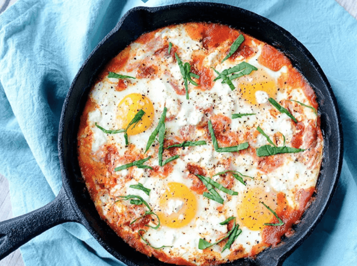

Shakshouka (V)
(15 Min, 2 Port., F: 34 g, K: 4 g, E: 35 g)

Zutaten
- 2 Tomaten, 1 Dose Tomatensauce, 2 rote Paprika, 6 Eier, 60g Feta-Käse, 1/4 TL Kurkuma, frischer Basilikum, Salz & Pfeffer
Zubereitung
- Paprika und Tomaten in mundgerechte Stücke schneiden. Basilikum hacken.
- Tomaten und Paprika in einer Pfanne ca. 3 Minuten erhitzen. Tomatensauce dazugeben und ca. 5 Minuten köcheln lassen.
- Die Eier in die Pfanne schlagen.
- Feta Käse über das Shakshouka bröseln. Mit Kurkuma und Salz & Pfeffer abschmecken.
- Das Shakshouka ist verzehrfertig, wenn die Eier eine Konsistenz ähnlich zu einem typischen Spiegelei haben. Kurz vor dem Verzehr mit Basilikum garnieren.
Originalrezept unter: Tasteaholics.com